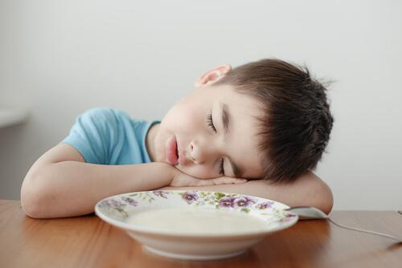

La anemia afecta de manera heterogénea a los diferentes grupos poblacionales. De este modo, los niños menores de 5 años que viven en las zonas rurales se ven más afectados que aquellos que residen en las zonas urbanas (1). El déficit de hierro en el organismo de un niño en crecimiento tiene graves efectos sobre el proceso de maduración cerebral y consecuencias negativas sobre la capacidad de aprendizaje y en sus habilidades psicomotrices y de socialización, especialmente en la escuela (1).
Etiam eu purus nec eros varius luctus. Praesent finibus risus facilisis ultricies venena tis. Suspendisse fermentum sodales lacus, lacinia gravida elit.
A. Efectos en la salud
Muchas personas con anemia no muestran señales o síntomas, sino van presentando los siguientes signos en el transcurso de ella:
-Cansancio, fatiga, laxitud y debilidad.
-Sofocación inclusive después de ejercicio moderado.
-Mareo o dolor de cabeza.
-Palpitaciones
-Palidez de la piel y de las membranas mucosas (labios y ojos) y debajo de las uñas.
-Irritabilidad.
-Falta de apetito.
-Crecimiento deficiente.
-Disminución en la capacidad de defensa a las infecciones.
Cabe resaltar que estos síntomas se producen cuando la anemia es moderada o severa (2).

B. Efectos en el desarrollo físico
La anemia afecta la capacidad para realizar ejercicios y su rendimiento al momento de practicarlos, ya que esta disminuye el transporte de oxígeno a la sangre. Además, puede incrementar las diversas condiciones médicas que un niño puede tener a futuro, como dolor anginoso, fallo cardíaco crónico, enfermedades coronarias, enfermedades pulmonares y enfermedades de las arterias periféricas (1).

C. Efectos en el desarrollo cognitivo y social
Algunos autores como Lozoff (1998), Walter (1998,1990), Cantwell (1974), Nokes, van den Bosh y Bundy (1998) demuestran esto y concluyen en que los niños con deficiencia de hierro tienen menos capacidad de atención, son más tímidos y dubitativos, menos perseverantes, menos alegres y desarrollan menos sus habilidades motrices. Asimismo, presentan una menor capacidad de respuesta ante estímulos y efectos negativos en el estado de ánimo. Además, concluyen que afecta su coeficiente intelectual evidenciado en pruebas de habilidades cognitivas.Y lo más impactante, es que a pesar de curarse la anemia luego del primer año, el efecto negativo en el desarrollo cognitivo no se revierte (1).
D. Efectos en el desarrollo conductual
El hierro también es parte de los procesos metabólicos de neurotransmisores principalmente dopaminérgicos y serotoninérgicos que tendrían un impacto en la conducta, aprendizaje, memoria, así como comportamientos afectivos como la depresión y ansiedad. Asimismo, conlleva a una menor capacidad para controlar respuestas impulsivas, lo que se le denomina como pobre control inhibitorio, y junto con otros trastornos como déficit de atención e hiperactividad, pueden tener un gran impacto no solo dentro de cada hogar, sino también en las escuelas, y posiblemente, con el tiempo, generen algún tipo de problema social mayor como la delincuencia (3).

Bibligrafía Efectos:
(1) Alcázar, L., Ministerio de Salud, & Grupo de Análisis para el Desarrollo. (2012, diciembre). Impacto económico de la anemia en el Perú. Recuperado 8 septiembre, 2018, de http://repositorio.grade.org.pe/handle/GRADE/77
(2) Dra. Gisela Pita Rodríguez Dra. C. Beatriz Basabe Tuero Dra. C. Santa Jiménez Acosta Lic. Onay Mercader Camejo . (2007). Consecuencias de la anemia. . En LA ANEMIA Aspectos nutricionales. Conceptos actualizados para su prevención y control (19). Perú: UNICEF Instituto de Nutrición e Higiene de los Alimentos (INHA).
(3) Zavaleta, N., Astete-Robilliard, L., & Revista Peruana de Medicina Experimental y Salud Pública. (2017). EFECTO DE LA ANEMIA EN EL DESARROLLO INFANTIL: CONSECUENCIAS A LARGO PLAZO. Recuperado 20 septiembre, 2018, de https://rpmesp.ins.gob.pe/index.php/rpmesp/article/view/3346/2902
 +51 952 839 351
+51 952 839 351